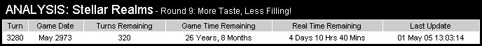
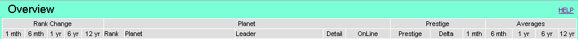
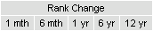
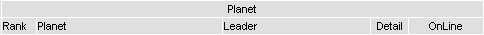
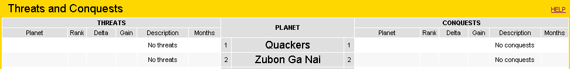

Please Note:
Stellar Realms is a dynamic game with prestige, ranking, and other attributes changing constantly. In addition to the changes calculated by the game engine at each turn tick, players may perform many actions that immediately affect their prestige and ranking for their and other planets. These actions include performing missions and destroying structures.
This analysis page is not real-time; it does not capture every change, and it does not display the current game data. Rather, this analysis page takes a "snap-shot" of the prestige and ranking data every 20 minutes at 02, 22, and 42 minutes past the hour. Changes effected by a player after the "snap-shot" is taken, will not appear in the analysis until the next "snap-shot" is taken. These changes will of course be reflected in the Stellar Realms screens, so it is likely you will see a discrepancy between the two sites.
Click on a link below for the topic of interest, or scroll down.
Page Heading

Turn
This is the current "turn" the game is at. Turns start at 0 at the beginning of the game, and increase by 1 every game month, which is 20 minutes real-life (RL) time. This is just a count of how many game months have elapsed since the start of the game. Note this is not the same thing as the "Turns" attribute that appears on the Stellar Realms screen, which is used for performing missions.
Game Date
Stellar Realms game play is set in a future time. The Game Date indicates the future date the game is currently at, and appears in the game as "Earth Date". This date should match the current "Earth Date" in the game.
Turns Remaining
The Stellar Realms game lasts 300 game years (50 RL days), which is 3600 turns or game months. Turns Remaining indicates how many turns or game months remain in the game.
Game Time Remaining
Expressed in game years and months, this is how much time remains before the end of the game
Real Time Remaining
Expressed in real-life days, hours, and minutes, this is how much real-life time is remaining before the end of the game.
Last Update
This is the date and time the last "snap-shot" of the prestige and rankings was performed. This date and time are Eastern Standard Time (EST) or GMT -5. The "snap-shots" occur approximately 2 minutes after a turn tick. This 2 minute delay ensures the Stellar Realms servers have finished updating before we capture the data.
Menu
The Stellar-Realms Analysis is presented in five (5) "Views" or windows. Each view gives a different perspective of the Galaxy Overview data. To switch views, simply click on one of the menu boxes, and that view will instantly be displayed.
Overview
A general overview of the planets including rank changes, average prestige gain, online status, and the difference in prestige (delta) between one planet and the next higher in rank.
Gainers & Losers
Displays on a month by month basis which planets are big prestige gainers and which planets have lost prestige.
Threats & Conquests
For each planet, shows which planets are threatening to overtake in prestige, and which planets will succumb in the future. In other words, if things stay constant, who is going to pass me, and who am I going to pass in the rankings.
Rank History
Displays changes in rank over various time periods for all the planets.
Prestige History
Displays a simple average monthly prestige gain over various periods for all the planets.
Overview

Rank Change
1 mth
One month rank change. This column displays the change in ranking from one (1) month ago to the current ranking. A positive number indicates the planet has gained in ranking, a negative number indicates the planet has fallen in ranking.
6 mth
Six month rank change. This column displays the change in ranking from six (6) months ago to the current ranking. Six game months is 2 hours real-life time.
1 yr
One year rank change. This column displays the change in ranking from 1 year (12 months) ago to the current ranking. One game year (12 months) is 4 hours real-life time.
6 yr
Six year rank change. This column displays the change in ranking from six (6) years ago to the current ranking. Six game years (72 months) is 24 hours or 1 day real-life time.
12 yr
Twelve year rank change. This column displays the change in ranking from twelve (12) yeas ago to the current ranking. Twelve game years is two (2) days real-life time.
Planet
Rank
The current planet ranking by prestige. The planets are listed in prestige ranking order as the objective of the game is to gain as much prestige as possible. Prestige rankings may change from turn to turn.
Planet
The name of the planet.
Leader
The leaders name for the planet.
Detail
A link, which opens a new window, displaying month-by-month detail of prestige and rank changes.
OnLine
There are two parts to this column; percent on-line, and current on-line status. Both of these are derived from the on-line status at the time the snap-shot was taken. The percentage is calculated by counting the number of times the user was on-line and dividing by the number of months the user has been playing. If a user logs-on after the snapshot is taken, they will not be marked on-line for that month, even though they were on-line for most of the month. Conversely, a user could be logged-in, but log-out just before the snapshot is taken, and will not appear to have been on-line for that month. Also keep in mind that some players have their browsers set to automatically refresh themselves, which keeps the user logged in, when in fact the player may not be playing at all.
Prestige
Prestige
The current prestige for the planet at the time the snapshot was taken.
Delta
This is the difference in prestige between one planet and the planet one rank higher. This indicates how much prestige seperates the planets.
1 mth
The change in prestige for the planet over the past 1 month. This is the prestige gain or loss in the past month.
Averages
6 mth
This is a simple monthly average of prestige gain for the past six months. It is calculated by totaling the prestige gain of the past six months and dividing by six. Exceptional events are not filtered out for this average.
1 yr
Average monthly prestige gain over the past 12 months (1 year or 4 hours real-life).
6 yr
Average monthly prestige gain over the past 72 months (6 years or 1 day real-life).
12 yr
Average monthly prestige gain over the past 144 months (12 years or 2 days real-life).
Gainers & Losers
While most planets gain around the same prestige every month, occasionally there are exceptional events where a planet will have a significantly larger gain or loss of prestige. These exceptions may be of interest, and are displayed here month by month for the past 72 months. Planets with a significant gain in prestige are displayed on the left side of the screen, and planets with a loss of prestige are displayed on the right side of the screen. When there is a battle between planets, you are likely to see the victor appear on the left with a gain of prestige, and the loser appear on the right with a loss of prestige, for the same month. This side by side comparison provides clues to the battles going on, even when there is no mention of them in the forums.
GAINERS
Gain
Description
Planet
Months Ago
LOSERS
A planet with any loss of prestige in a month will appear in the Losers column. Prestige loss can come from several sources. Demolishing a structure, whether voluntarily or forced due to lack of credits to pay maintenance, will result in a loss of prestige. A loss of prestige due to demolition is usually small unless a number of structures are demolished all at once. Battles with other planets may also cause a loss of prestige, and this loss may be very large. Usually, you will see the victorious planet in the gain column with a large gain. If no planet appears in the gain column, it may be that the planet was attacked by the Q'ozsh or other non-player entity. Performing missions may also cause a loss of prestige.
Months Ago
Planet
Description
Loss
Threats & Conquests

The Threats & Conquests page displays for each planet...
• the planets that are threatening to overtake the planet in ranking
• and the planets that may be overtaken.
This is based on the 6 month average of prestige gains, and the difference in prestige between the planets. For example; if there is a 1,000 prestige difference between planet "Pokey" and planet "Speedy", and planet "Speedy" is producing 200 more prestige, based on a six month average, planet "Speedy" will overtake or pass planet "Pokey" in 5 months.
(1000 prestige difference / 200 prestige gain difference) = 5 months
In this case, planet "Speedy" will appear in the threats column for planet "Pokey", and planet "Pokey" will appear in the conquests column for planet "Speedy".
There is a limit of 144 months for inclusion in the threats and conquests columns. If the overtake will take more than 144 months, the challenge does not appear so as not to clutter the page with too much information.
The prestige average used in the calculation is an average of the previous six positive prestige gains for the planet. If a planet has a prestige loss for a turn, that turn is not included in the average calculation. The reason for this is that prestige losses are unusual events that typically do not reflect the overall progress of a planet. For example; if planet Alpha is generating 500 prestige each round, their 6 month prestige average will be 500, which indicates their relative prestige gain strength compared to other planets. If planet Alpha should be involved in a conflict one round, and lose 10,000 prestige, this unusual event would cause their average to be negative for the next six rounds, even though they may continue to gain at the rate of 500 prestige each turn. A negative average may cause a large number of planets to appear as threats, when in fact, they are not. For this reason, we exclude turns that have a prestige loss in the calculation of the prestige average.
THREATS
Threats are planets that are, on average, gaining more prestige per month than the target planet. That is, planets that are threatening to overtake the target planet in rank at some point in the future. There is a cutoff of 144 months to keep the listing small and significant. Find your planet in the middle column, and you will see all the planets that are gaining on you and threatening to overtake you in the rankings.
Planet
The name of the planet that is gaining more prestige than the target planet.
Rank
The current rank of the planet that is a threat.
Delta
The difference in prestige between the threatening planet and the target planet. This is how much prestige, at this exact point in time, the threatening planet will have to gain to overtake the target planet. This delta will change from month to month because the prestige gain for both planets may not stay constant.
Gain
Gain is the amount of prestige the threatening planet is gaining on the target planet each month, at this point in time, based on a 6 month average.
Description
This may say "No Threats" if there are no planets threatening to overtake the target planet within 144 months. If the target planet does have threatening planets, this will say "will overtake in".
Months
Months is an estimated number of months before the threatening planet will overtake the target planet, assuming everything stays the same. Since prestige gain can and will vary over time, this is only an estimate.
CONQUESTS
Conquests are planets that the target planet is forecast to overtake at some point in the future. When the target planet is gaining more prestige, on average, than a planet higher in the ranking, it is possible that the target planet will overtake that planet in the future. There is a cutoff of 144 months to keep the listing small and significant. Find your planet in the middle column, and on the right you will see all the planets you are gaining on and may possibly overtake.
Planet
The name of the planet that may be overtaken.
Rank
The current rank of the planet being threatened.
Delta
The difference in prestige between the target planet and the threatened planet. This is how much prestige, at this exact point in time, the target planet will have to gain to overtake the threatened planet. This delta will change from month to month because the prestige gain for both planets may not stay constant.
Gain
Gain is the amount of prestige the target planet is gaining on the threatened planet each month, at this point in time, based on a 6 month average.
Description
This may say "No Conquests" if there are no planets the target planet will overtake within 144 months. If the target planet does have conquest planets, this will say "will overtake in".
Months
Months is an estimated number of months before the target planet will overtake the threatened planet, assuming everything stays the same. Since prestige gain can and will vary over time, this is only an estimate.
Rank History
1m
One month rank change. This column displays the change in ranking from one (1) month ago to the current ranking.
6m
Six month rank change. This column displays the change in ranking from six (6) months ago to the current ranking. Six game months is 2 hours real-life time.
1y
One year rank change. This column displays the change in ranking from 1 year (12 months) ago to the current ranking. One game year (12 months) is 4 hours real-life time.
6y
Six year rank change. This column displays the change in ranking from six (6) years ago to the current ranking. Six game years (72 months) is 24 hours or 1 day real-life time.
12y
Twelve year rank change. This column displays the change in ranking from twelve (12) yeas ago to the current ranking. Twelve game years is two (2) days real-life time.
18y
Eighteen year rank change. This column displays the change in ranking from eighteen (18) years ago to the current ranking. Eighteen game years is three (3) days real-life time.
24y
Twenty-four year rank change. This column displays the change in ranking from twenty-four (24) years ago to the current ranking. Twenty-four game years is four (4) days real-life time.
30y
Thirty year rank change. This column displays the change in ranking from thirty (30) years ago to the current ranking. Thirty game years is five (5) days real-life time.
60y
Sixty year rank change. This column displays the change in ranking from sixty (60) years ago to the current ranking. Sixty game years is ten (10) days real-life time.
120y
One hundred twenty year rank change. This column displays the change in ranking from one hundred twenty (120) years ago to the current ranking. One hundred twenty game years is twenty (20) days real-life time.
Prestige History
1m
One month rank change. This column displays the change in ranking from one (1) month ago to the current ranking.
6m
Six month rank change. This column displays the change in ranking from six (6) months ago to the current ranking. Six game months is 2 hours real-life time.
1y
One year rank change. This column displays the change in ranking from 1 year (12 months) ago to the current ranking. One game year (12 months) is 4 hours real-life time.
6y
Six year rank change. This column displays the change in ranking from six (6) years ago to the current ranking. Six game years (72 months) is 24 hours or 1 day real-life time.
12y
Twelve year rank change. This column displays the change in ranking from twelve (12) yeas ago to the current ranking. Twelve game years is two (2) days real-life time.
18y
Eighteen year rank change. This column displays the change in ranking from eighteen (18) years ago to the current ranking. Eighteen game years is three (3) days real-life time.
24y
Twenty-four year rank change. This column displays the change in ranking from twenty-four (24) years ago to the current ranking. Twenty-four game years is four (4) days real-life time.
30y
Thirty year rank change. This column displays the change in ranking from thirty (30) years ago to the current ranking. Thirty game years is five (5) days real-life time.
60y
Sixth year rank change. This column displays the change in ranking from sixty (60) years ago to the current ranking. Sixty game years is ten (10) days real-life time.
120y
One hundred twenty year rank change. This column displays the change in ranking from one hundred twenty (120) years ago to the current ranking. One hundred twenty game years is twenty (20) days real-life time.
Planet Detail
Turn
There are 3,600 turns in the game (300 years X 12 months). The turns start at 1 and increment by 1 every 20 minutes as each month of galaxy time passes. For our analysis, we capture the Galaxy Overview data once each turn (month) at approximately 02, 22, and 42 minutes after the hour. The turn column indicates the turn number the data was captured for. This number has nothing to do with the "Turns" that appear on the top right of the Stellar-Realms screens, which are used for performing missions. In fact, the turn number does not appear anywhere on the SR screens.
Ago
The Ago column simply indicates how many months (turns) ago the data for that turn was captured. This helps correlate prestige changes with time. For example, if you see a small prestige loss for a turn, and the ago column is (-5), which is 5 turns or 1 hour and 40 minutes ago, it may jog your memory that you demolished a structure around that time.
Game Date
This is the game date or galaxy date that appears in the Planet Overview screen. Some people may prefer to track things using the game date rather than turn number, which does not appear on the SR screens.
Live Date
The Live Date column displays the real-life date and time that the data for the turn was captured. The date/time information is displayed as Day dd Mth Year Hour:Minute:Second. This timestamp is based on the US Eastern time zone, and may not match the time zone for where you live. A future enhancement may allow for this time to be displayed in your time zone.
OnLine
The OnLine column indicates either "Yes" or "No" whether the player was on-line at the time the snapshot was taken. It is possible a player was on-line during the turn, but get a "No" status if they just happen to not be on-line when the snapshot of the turn was taken.
Rank
The Rank column indicates the planets prestige ranking at the time the snapshot was taken for that turn. A planets ranking may change during a round due to actions the player may take such as performing missions or destroying structures. If the rank changes after the snapshot has been taken, the new rank will appear in the next turn.
Change
This Change column displays the change in rank that occurred between turns. For example, if your planet was ranked 15th last turn, but this turn it is ranked 14th, the Change column will show a 1 indicating a change of 1 in rank. Usually this column is 0 meaning you have not changed rank.
Prestige
The Prestige column displays the prestige for the planet at the time the snapshot was taken.
Change
This change column displays the change in prestige from the previous turn to this turn. It is how much prestige is gained or lost each turn.